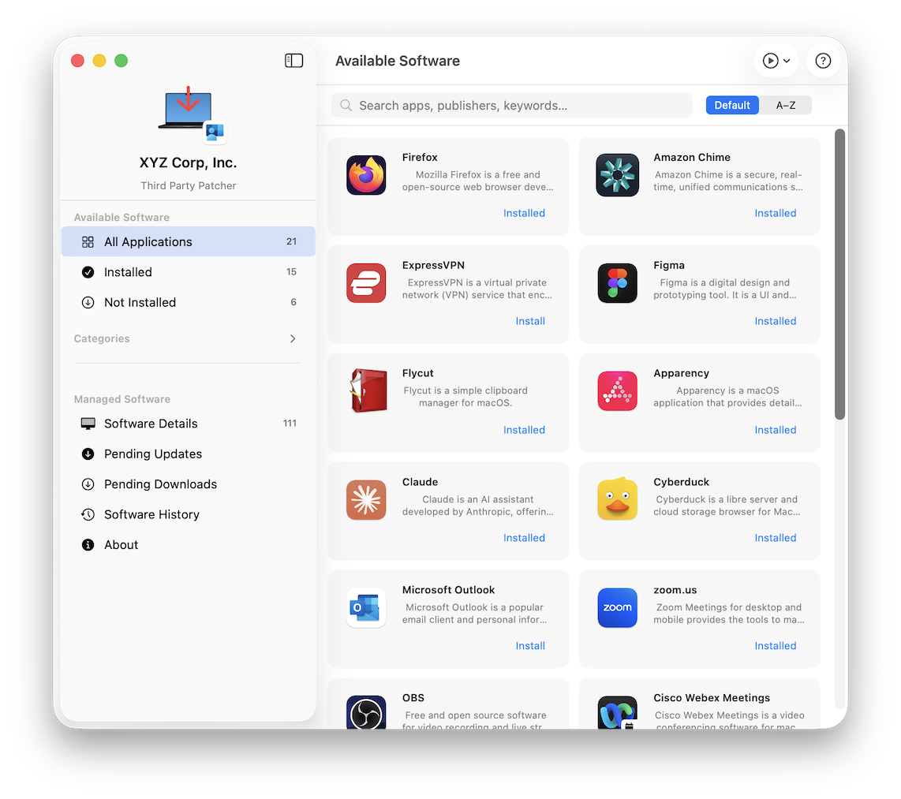
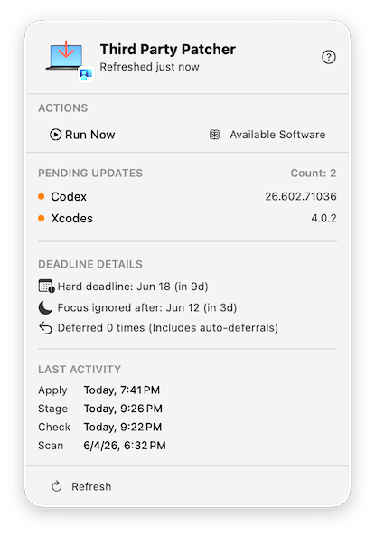
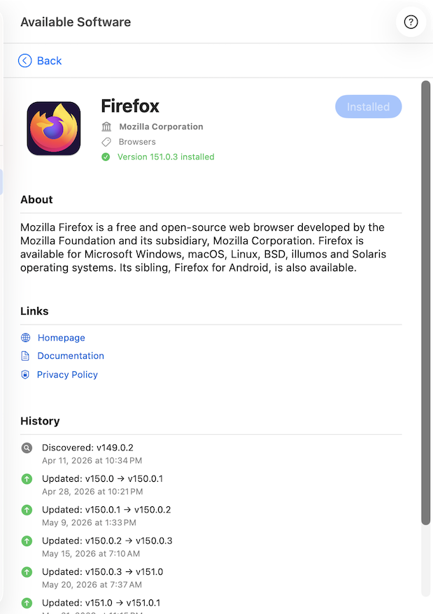
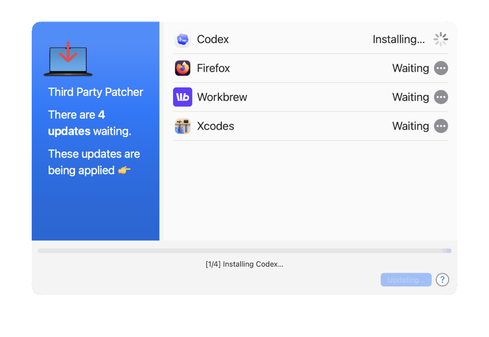
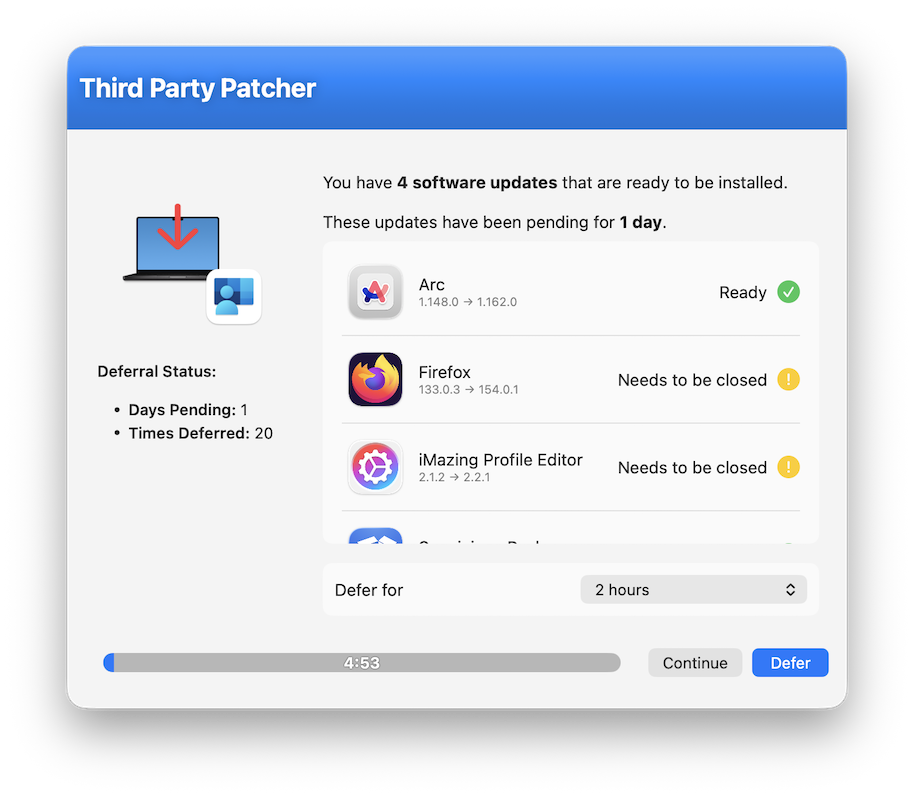

Third-party patching for macOS,
without the babysitting.
Third Party Patcher discovers installed apps, checks for updates, stages installers in the background, and applies them on a schedule you control — with optional swiftDialog prompts so end users always know what's happening. MDM-agnostic, and built on Installomator.

Four phases, each on its own schedule
A lightweight LaunchDaemon wakes patcherscheduler every 10 minutes. Each wake is cheap — it exits in milliseconds when nothing is due — and every phase can also be triggered on demand from the command line or from the user-facing apps.
Discover
Evaluates Installomator labels to find every installed third-party app on the Mac.
Compare
Looks up the latest available version for each app and flags what needs updating.
Download
Downloads and validates installers in the background — no interruption, no waiting.
Install
Installs staged updates, prompting the user only if a blocking process is running.
Built for IT — and for the people using the Mac
Two optional apps give end users visibility and choice, without giving up MDM control.

PatcherMenu
An optional menu bar app that gives users real-time visibility into patch status. The icon updates automatically when updates are staged or pending.
- Pending updates and pending downloads at a glance
- Deadline countdown and per-phase last-activity timestamps
- A Run Now menu to trigger any phase immediately
- Enabled with a single preference key, fully MDM-configurable

Available Software
A standalone window app that gives users a self-service software catalog and a full view of every app under patcher management.
- Optional titles users can install on demand, IT-configured
- Every managed app, with status, install path, and history
- A chronological update history, filterable by event type
- Toolbar Run Now menu to trigger phases directly
Informed, not interrupted
All interactive UI is powered by swiftDialog, launched in the console user's session. Non-blocking progress windows appear during Scan, Check, and Stage; a deferral prompt appears before Apply when a blocking process is detected — letting users pick a defer duration or install right away.
Focus/DND detection silently defers without incrementing the deferral counter, so a meeting or presentation never pushes someone toward a deadline unfairly.
| Threshold | Default | Behavior |
|---|---|---|
| Focus deadline | 4 days | Focus/DND no longer silently defers |
| Hard deadline | 14 days | Defer button removed; update applies unconditionally |


Everything a fleet-scale patching tool needs
MDM-agnostic
Works with Jamf Pro, Intune, or any MDM that can deploy a package and a configuration profile — no vendor lock-in.
Installomator-powered
Updates are driven by community-maintained Installomator label files, downloaded and kept current automatically.
Managed & custom labels
Supply your own Installomator-compatible label files to override existing labels or support internal apps.
Self-service catalog
Let users install approved optional software on demand from the Available Software app.
Deferral & deadlines
Configurable defer options with Focus/DND awareness and two-tier deadline enforcement.
Compliance reporting
patcherreport generates summary, pending, recent, broken, and deferral reports from local state — no sudo required.
Deploy in minutes via MDM
Distribute the signed and notarized .pkg through your MDM. It installs three command-line binaries, the LaunchDaemon, and loads the daemon immediately.
- macOS 14 Sonoma or later
-
swiftDialog 2.x or later for user prompts — install via
patcher ensure swiftdialog - Network access to GitHub for Installomator label updates and app downloads
| Binary | Purpose |
|---|---|
patcher | Runs individual patching phases on demand |
patcherscheduler | Daemon entrypoint; also provides a status subcommand |
patcherreport | Generates patch compliance reports |
PatcherMenu.app | Menu bar status and Run Now trigger |
Available Software.app | Self-service catalog and management view |
Migrating from App Auto-Patch? Preference key names are largely compatible — see the compatibility note. Ready-to-use inventory scripts for Jamf and Intune are included in the repo.
Full IT-admin docs in the project wiki
Ready to stop chasing third-party updates by hand?
Free, open source, and MIT licensed. Deploy today via your MDM of choice.